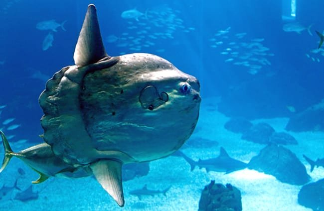

Ocean sunfish are native to the temperate and tropical waters of every ocean in the world. Mola genotypes appear to vary widely between the Atlantic and Pacific, but genetic differences between individuals in the Northern and Southern hemispheres are minimal.
Although early research suggested sunfish moved around mainly by drifting with ocean currents, individuals have been recorded swimming 26 km (16 mi) in a day at a cruising speed of 3.2 km/h (2.0 mph). Sunfish are pelagic and swim at depths to 600 m (2,000 ft). They are also capable of moving rapidly when feeding or avoiding predators, to the extent they can vertically leap out of water.
Sunfish are most often found in water warmer than 10 °C (50 °F); prolonged periods spent in water at temperatures of 12 °C (54 °F) or lower can lead to disorientation and eventual death. Surface basking behavior, in which a sunfish swims on its side, presenting its largest profile to the sun, may be a method of “thermally recharging” following dives into deeper, colder water in order to feed. Sightings of the fish in colder waters outside of its usual habitat, such as those southwest of England, may be evidence of increasing marine temperatures. Sunfish are usually found alone, but occasionally in pairs.
Ocean sunfish may live up to ten years in captivity, but their lifespan in a natural habitat has not yet been determined. Their growth rate is also undetermined. However, a young specimen at the Monterey Bay Aquarium increased in weight from 26 to 399 kg (57 to 880 lb) and reached a height of nearly 1.8 m (5.9 ft) in 15 months.
The sheer size and thick skin of an adult of the species deters many smaller predators, but younger fish are vulnerable to predation by bluefin tuna and mahi mahi. Adults are consumed by sea lions, orca, and sharks. Sea lions appear to hunt sunfish for sport, tearing the fins off, tossing the body around, and then simply abandoning the still-living but helpless fish to die on the seafloor.
Newly hatched sunfish larvae are only 2.5 mm (0.1 in) long and weigh a fraction of a gram. They grow to become fry, and those which survive grow many millions of times their original size before reaching adult proportions. Sunfish fry, with large pectoral fins, a tail fin, and body spines uncharacteristic of adult sunfish, resemble miniature pufferfish, their close relatives. Young sunfish school for protection, but this behavior is abandoned as they grow. By adulthood, they have the potential to grow more than 60 million times their birth size, arguably the most extreme size growth of any vertebrate animal.
The diet of the ocean sunfish was formerly thought to consist primarily of various jellyfish. However, genetic analysis reveals that sunfish are actually generalist predators that consume largely small fishes, fish larvae, squid, and crustaceans, with jellyfish and salps making up only around 15% of the diet. Occasionally they will ingest eel grass. This range of food items indicates that the sunfish feeds at many levels, from the surface to deep water, and occasionally down to the seafloor in some areas.